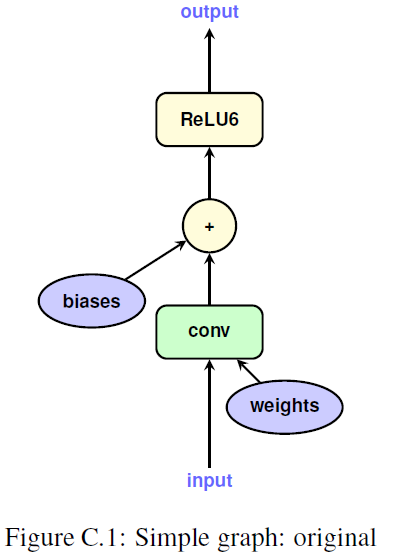
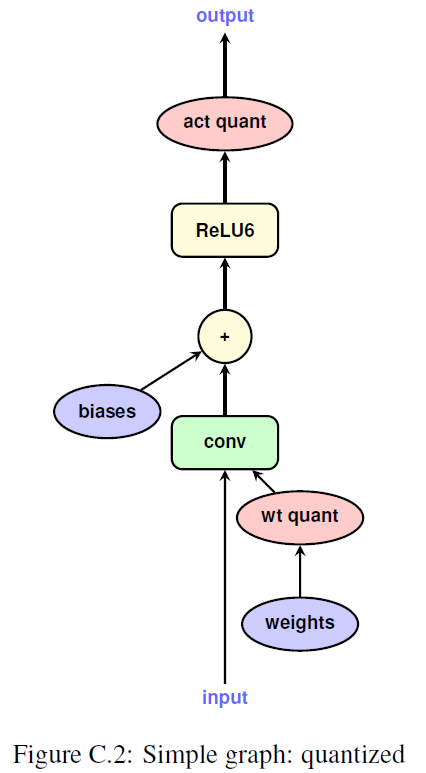
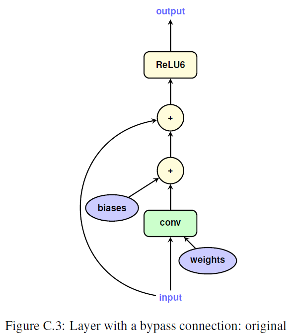
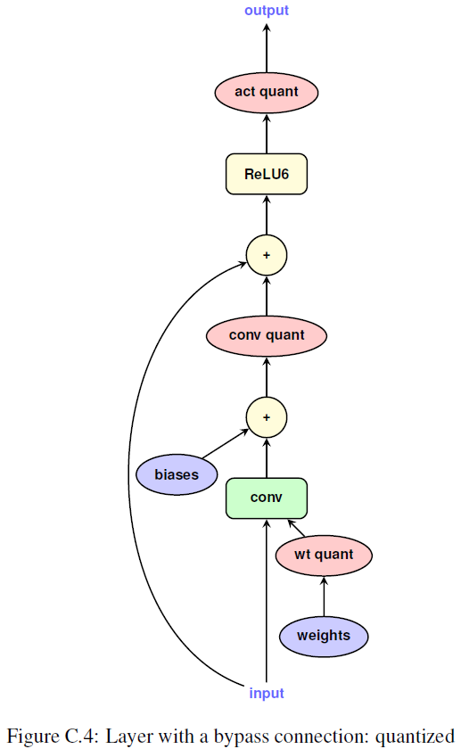
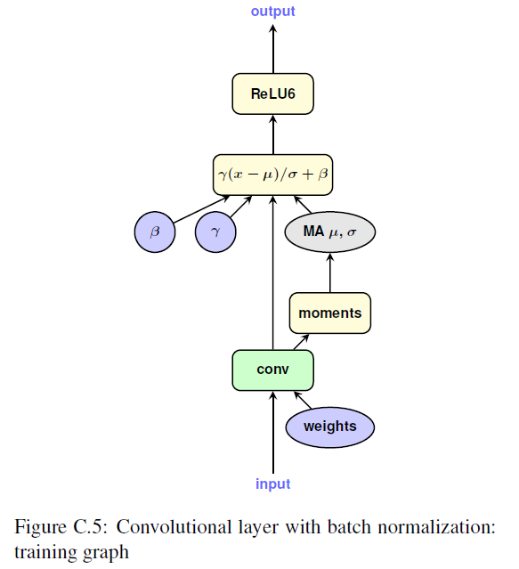
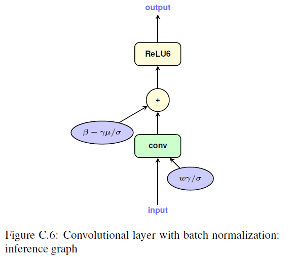
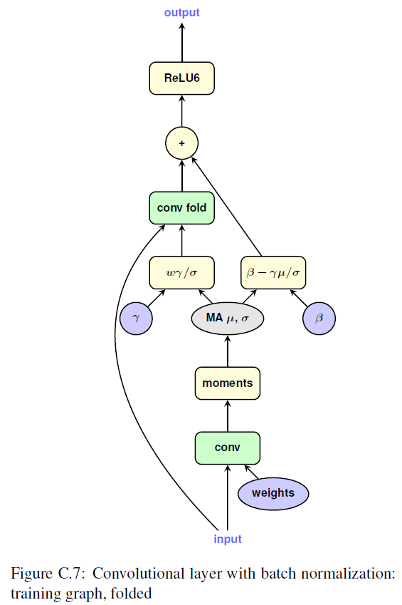

1. Quantization and Training of Neural Networks for Efficient Integer-Arithmetic-Only Inference
Paper: https://arxiv.org/abs/1712.05877
Code: refer to TensorFlowLite.quantize
1.1. Training with simulated quantization
1.1.1. Point-wise quantization:
Here, $r$ represents the real value, $q$ represents the quantized value. $\lfloor \cdot \rceil$ denotes rounding to the nearest integer.
for weights: $a:=min(w), b:=max(w)$
for activation: collect [a;b] during training and aggregate them via exponential moving average (EMA)
exponential moving average (EMA) in tensorflow:
shallow_variable -= (1-decay) * (shallow_variable-variable)
reasonable values for decay are close to 1.0, e.g., 0.999, 0.99999, etc
Note: activation quantization is disabled at the start of training
1.1.2. compute gradient
Here, we have $\frac{\partial{q}}{\partial{r}}=0$ if $r\notin[a,b]$, otherwise $\frac{\partial{q}}{\partial{r}}=1$.
1.2. Inference with integer-arithmetic only
1.2.1. Data type
input: uint8
weights: uint8
bias: int32
activation: int32
output: uint8
1.2.2. Affine mapping from q to r
Formulation:
where $S$ means "Scale" and $Z$ means "Zero point". And $S=s(a,b,n), Z=z(a,b,n)$.
Therefore, considering $r_3=r_1*r_2$:
Let $M:=\frac{S_1S_2}{S_3}$ and $M=2^{-n}M_0$, $M_0\in(0.5,1]$.
For matrix multiplication of two matrices with size of $N\times N$.
It needs $O(N^3)$ subtraction to compute the result.
More efficient implementation:
,
where $\bar a1^{(i)}:=\sum{j=1}^N q1^{(i,j)}$ and $a_2^{(k)}:=\sum{j=1}^N q2^{(j,k)}$. Therefore, the computational costs is mainly from the computation of $\sum{j=1}^N q_1^{(i,j)}q_2^{(j,k)}$
1.2.3. The Following operations
scale down: int32 activation --> int8 output activation
cast down: int8 activation --> uint8 output
1.2.4. Batch normalization folding
1.2.5. Graph illustration
simple graph for single layer
- origin

- quantized

layer with bypass
- origin

- quantized

convolutional layer with batch normalization
- training

- inference

- training with fold

- training with fold quantized